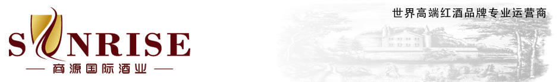

首页 >
关于我们

20年的酒业营销经验，让久加久熟知国内外的品牌酒行业的现状和趋势，了解消费者对购酒的各类需求。我们懂得利用行业经验，在不同的价格区间，为消费者挑选同类产品中最好的品牌，并且根据不同类型顾客的需求，量身订制产品组合和服务，无论是自饮、团购、婚庆、宴请、送礼、私藏，在久加久都能一一得到满足。
与国际国内知名酒品牌、酒供应商之间的长期友好合作，让久加久无论在采购价格，资源整合，还是产品结构完整性方面，都拥有着明显优势。同时，由于连锁规模优势和专业市场地位，久加久也正成为越来越多品牌商和供应商实现品牌推广和产品销售的良好平台，很多新酒品牌正是通过久加久销售出其第一瓶酒。
正宗和品质是每个购酒消费者最基本的需求，也是久加久对于自身商品最基本的要求。久加久以专家的眼光和标准，从源头采购、物流存储、运营管理等层层环节上对每瓶酒进行严格把控。久加久承诺：我们销售的每一瓶酒都来自正宗的渠道,我们为销售任何一瓶酒的品质负责。